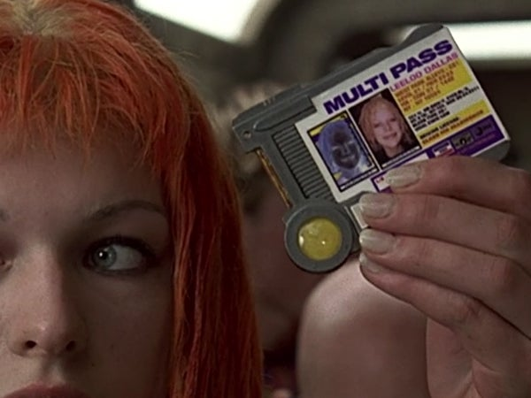

true·vector
In navigation the speed and direction of a target relative to a reference point (usually the Geographic [true] North Pole) is called its true vector. To calcuate this an observer generally measures the velocity of the target relative to the observer and then performs a translation of that vector to the reference point. This could be likened in machine learning (well, at least by me) to attempting to determine the “goldilocks” (neither underfit nor overfit) prediction curve by application of optimization algorithms to datasets of observations.
Multiple passes of meandering musings, including but not limited to the rather broad field of artificial intelligence along with its various foci of effort.

The meandering muser is a semi-retired generalist, living as a child for several years with his (literally) dirt-poor grandparents on a too-big farm, starting work as a department store janitor in high school (but with talent rapidly recognized, was upgraded to cleaning the gerbil cages after less than a month), moving into house carpentry and construction to make enough money for and continuing that occupation throughout college, as a sports photographer, then a career as a USAF officer, followed by a brief stint as a private investor, publicly-traded-company board member, then appointed by a federal judge as a small-cap CEO to effect recovery of embezzled funds which involved some international detective work, on to participating in an aviation manufacturer startup, and finally scraping the rust off the degree and engaging as a cyber security systems engineer in the IT field for the last couple of decades, but frequently enjoying the odd job in new domains along the way.
“A human being should be able to change a diaper, plan an invasion, butcher a hog, conn a ship, design a building, write a sonnet, balance accounts, build a wall, set a bone, comfort the dying, take orders, give orders, cooperate, act alone, solve equations, analyze a new problem, pitch manure, program a computer, cook a tasty meal, fight efficiently, die gallantly. Specialization is for insects.”
Lazurus Long as written by Robert Heinlein in Time Enough for Love